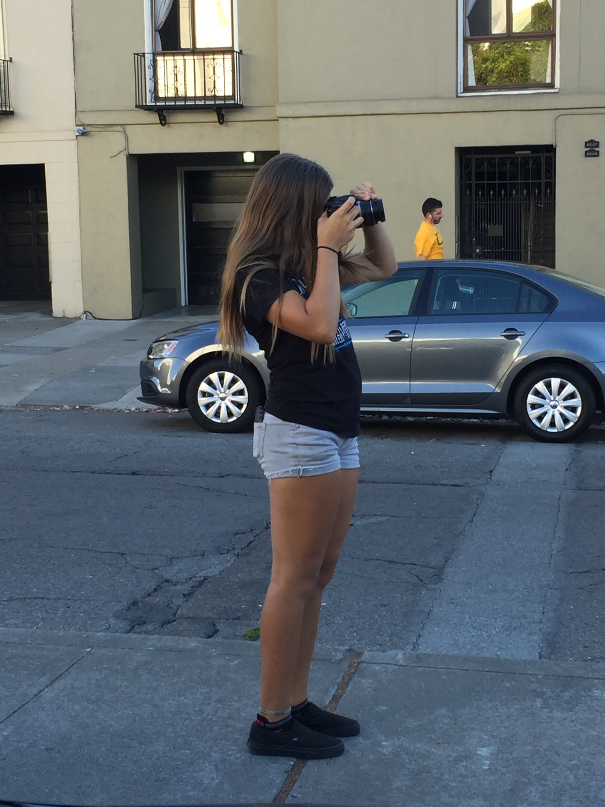

I want to get a Track Scholarship to college and get a Microbiology Bachelor's Degree. If I do not get a scholarship I plan to go to Cuesta for two years then transfer to Cal Poly. I am also looking at San Diego State.


Within Microbiology I want to become a brewer's chemist and do quality control at my dads future brewery, or a brewery in general. If I decide to go to San Diego State I could possibly intern at White Labs which is the main yeast supplier for pretty much all breweries.

In addition to Microbiology I also hope to further pursue my photography on the side.
